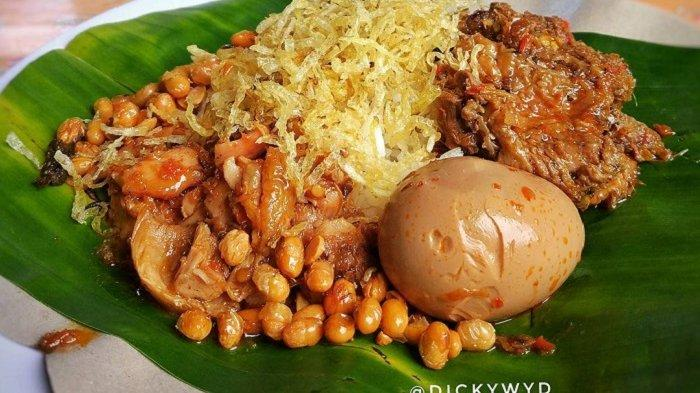

Wisata Kuliner Lombok

PLECING KANGKUNG
Plecing kangkung sering kali ditemukan di dua daerah yang saling
berdekatan yaitu Lombok dan Bali. Di Lombok makanan ini dihidangkan
berbeda dengan di Bali. Sekilas terlihat mirip, tetapi rasa dan
bahan plecing kangkung dari dua daerah ini berbeda. Pada umumnya
plecing kangkung adalah sajian dari kangkung yang direbus. Di bagian
atasnya disiram bumbu pedas dari sambal dan bahan lainnya yang sudah
diulek.

SATE BULAYAK
Sate Bulayak, Salah Satu Bintang Kuliner Khas Lombok yang Patut
Dicoba Sate Bulayak. Pulau yang terletak di Nusa Tenggara Barat ini
tidak hanya menawarkan keindahan alamnya, melainkan makanan khas
yang menarik dan lezat untuk disantap. Selain ayam taliwang yang
menjadi bintangnya, terdapat juga sate bulayak yang cukup terkenal
dan menjadi makanan khas Lombok, khususnya bagi masyarakat Suku
Sasak. Siapa yang tidak mengenal sate? Advertisement Sate, mungkin
sudah tidak asing lagi bagi masyarakat Indonesia. Makanan khas
Indonesia yang terbuat dari berbagai macam daging lalu dipotong
menjadi dadu kecil, kemudian ditusukkan ke kayu dan dibakar.
Berbahan dasar daging sapi, sate bulayak tidak begitu berbeda dengan
sate-sate pada umumnya. Namun, yang membedakkan sate ini adalah
karena bumbunya berasal dari rempah-rempah Suku Sasak, buah asam
Sumbawa adalah salah satu rahasianya.

NASI PUYUNG
Nasi puyung adalah sajian nasi lengkap dengan lauk dan sayur khas
Lombok, Nusa Tenggara Barat (NTB). Kuliner ini tergolong kuliner
warisan warga setempat karena telah ada sejak zaman dulu. Nasi
puyung dibungkus dengan daung pisang. Karena itu, ketika dibuka
aroma sedap yang pertama menyeruak. Di dalamnya ada nasi putih, yang
didampingi lauk ayam suwir pedas beraroma gosong, tumis buncis,
kering kentang pedas manis dan biasanya ditambah dengan serundeng
serta kedelai goreng. Sambal tentu saja tak ketinggalan.